Ten mature, actively-maintained Python projects, two independent measurement panels, four metric families, 2014Q1–2026Q2 (2026Q3 excluded everywhere below as the partial trailing quarter). Methodology, the file filter, and every extraction caveat are in README.md; this document is the findings.
Sample:
| repo | HEAD (short) | Panel A rows | Panel B quarters | clone size |
|---|---|---|---|---|
| pandas | 04dff44f6224 |
23,579 | 51 | 451 MB |
| numpy | d9079517ca17 |
11,250 | 51 | 212 MB |
| scipy | f389d8d3514b |
16,711 | 51 | 228 MB |
| scikit-learn | 2cc7893a2097 |
12,833 | 51 | 211 MB |
| matplotlib | 8a621d3bbebb |
21,342 | 51 | 532 MB |
| django | fc4eaaabf419 |
12,711 | 51 | 321 MB |
| sqlalchemy | 121d0cde4679 |
5,628 | 51 | 126 MB |
| sympy | 3cbbd286f761 |
30,644 | 51 | 216 MB |
| ipython | e18b391ad00d |
6,906 | 51 | 91 MB |
| pytest | 3fd8675d6d79 |
5,988 | 51 | 48 MB |
Full HEAD SHAs, extraction timestamps, and clone/run timings are in
output/<repo>_meta.json. parse_rate is reported per repo-quarter in
output/<repo>_panel_b.csv; every repo reaches 1.00 well before 2020 (pandas
and scikit-learn take until ~2017 to clear legacy Python-2-only syntax in a
few files — see README for the specific example verified during validation).
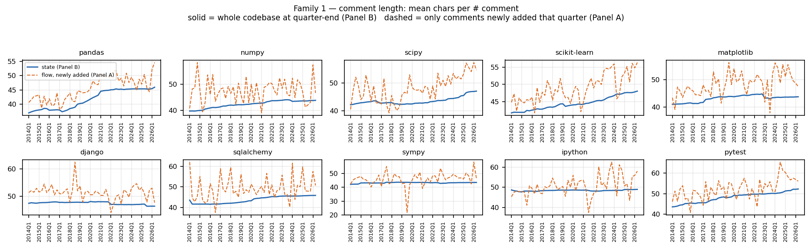
Both panels move the same direction — comment length has grown steadily,
not suddenly — but disagree on how much, which is the point of running two
panels: state (mean length of every # comment in the codebase at
quarter-end, Panel B) rose a fixed-effects-pooled +9.0% over the window
(42.7 → 46.6 chars); flow (mean length of comments newly added that
quarter, Panel A) rose +13.4% (45.7 → 51.8 chars) and is visibly
noisier quarter to quarter. That gap is expected: state is a slow-moving
average over everything ever written and still standing, while flow reacts
immediately to whatever a handful of large commits did that quarter (see
the pandas 2026Q2 note under Author decomposition below for a concrete
case of flow being author-sensitive in a way state isn't).
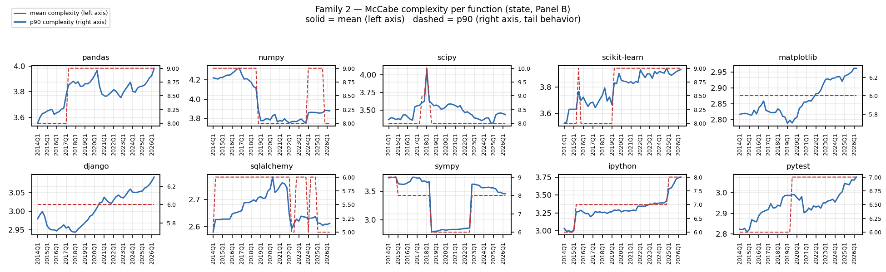
Mean McCabe complexity per function grew a fixed-effects-pooled +4.7% (3.26 → 3.42) — the smallest movement of any of the four families, and it is not a smooth trend so much as several repo-specific step changes (visible as literal steps in the p90 line, since p90 of a small integer distribution quantizes): pandas steps up around 2017, numpy steps down around 2018–2019, scikit-learn steps up twice (2015, 2019). sympy's swings are the largest in the sample and are a composition artifact, not a complexity story — see the Event study section.
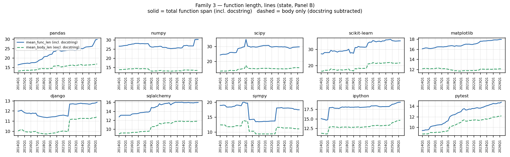
This is the headline check from the brief, and it replicates across the
whole panel, not just pandas: mean_func_len (total span, includes the
docstring) rose a pooled +25.0% (17.9 → 22.4 lines) while
mean_body_len (docstring subtracted) rose only +17.0% (12.1 → 14.1
lines). In every one of the 10 small multiples the solid (total) line
visibly separates from the dashed (body) line over time — functions are
getting longer, but a real share of that growth is documentation, and
reporting only mean_func_len overstates how much the executable body
of a typical function has grown by roughly a third of the apparent effect,
consistently across the sample.
sympy is excluded from the "smooth trend" characterization here — its two sharp discontinuities (2018Q3, 2022Q4) are a distinct phenomenon, addressed under Event study.
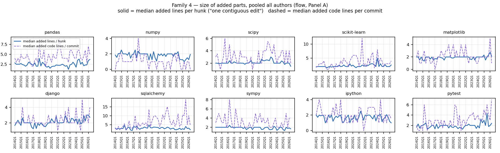
The cleanest result in the whole study. Median added lines per hunk — the size of one contiguous, atomic edit — is essentially flat across all 10 repos and all 12 years: pooled fixed-effects change is +4.3% (2.09 → 2.18 lines), noise-level. Meanwhile median added code lines per commit rose +43.5% (2.3 → 3.3 lines) over the same window. Read together: the growth is not in how big a single edit is — people still touch a couple of lines at a time — it's in how many hunks/files a typical commit now bundles together. "Commits got bigger" and "edits got bigger" are different claims, and this panel only supports the first one.
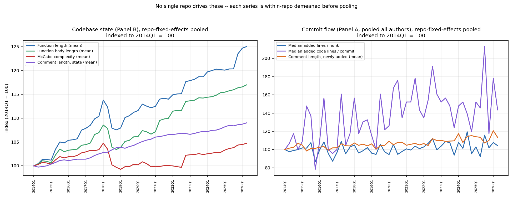
Each line is within-repo demeaned before averaging, then re-centered on the panel's grand mean and indexed to its own 2014Q1 value — so a single large project (pandas, with 4× sympy's function count) can't just outweigh the others by sitting at a higher absolute level. The ranking holds even after that correction: function length moved the most, then body length, then state comment length, then complexity (left panel); on the flow side (right), added-code-lines-per-commit is both the biggest mover and by far the noisiest, comment-flow is a distant second, and hunk size is flat (right panel) — same conclusions as the per-family charts, confirming they aren't an artifact of one or two large repos.
Four candidate break dates were tested against a null of "no discrete shift": 2018Q1 (roughly when several of these projects began simplifying away Python-2 support), 2020Q1 (COVID-era shift to remote work), 2022Q4 (ChatGPT's public release, Nov 30 2022 — the natural candidate given this project's broader AI-adoption research context), and 2023Q1.
Naive pre/post mean comparison is misleading here. At every candidate date, function length, body length, and comment length show up as "9 or 10 of 10 repos moved in the same direction" — which looks exactly like the break signature the brief warned to look for, except it shows up identically at 2018Q1 as at 2022Q4. That's the signature of a persistent multi-year growth trend, not a break at any particular point: any split of a monotonically rising series looks like "everyone moved up after X."
The actual test: fit each repo's own linear trend on the quarters before the candidate date, extrapolate it forward, and check whether the real values land on that line or jump away from it. Deviation-from-own-trend plots for all four state metrics:
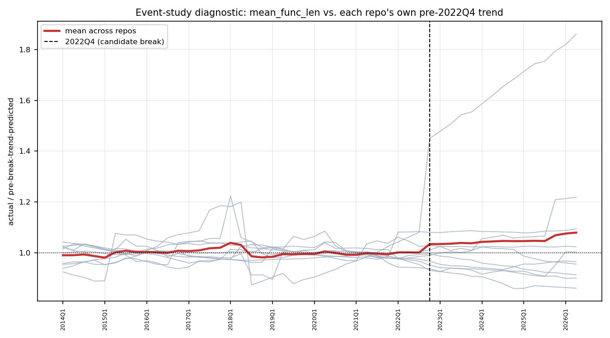
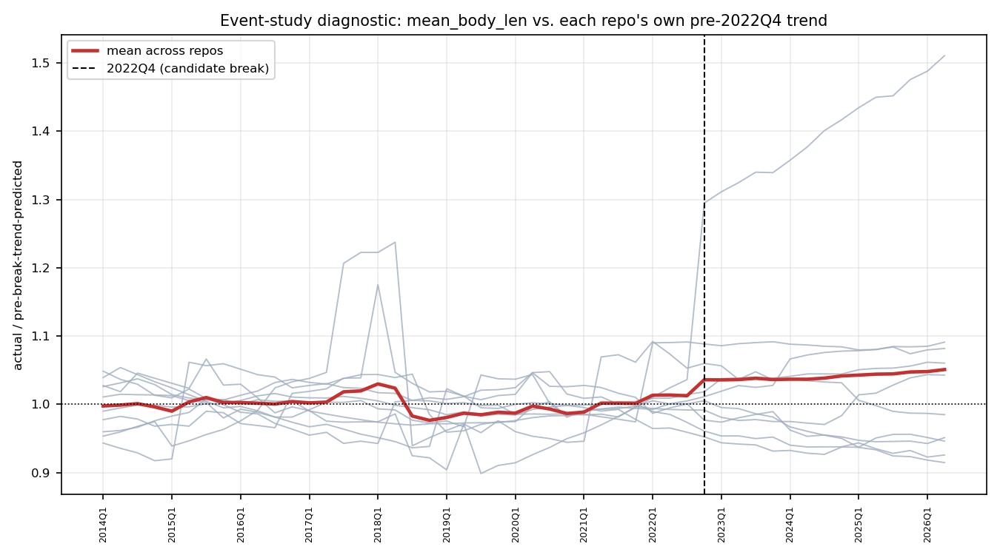
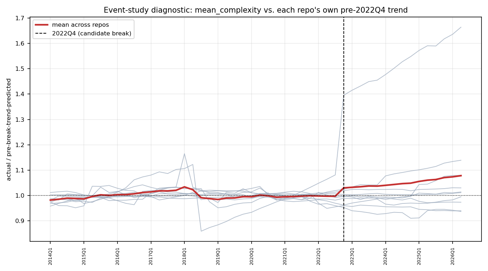
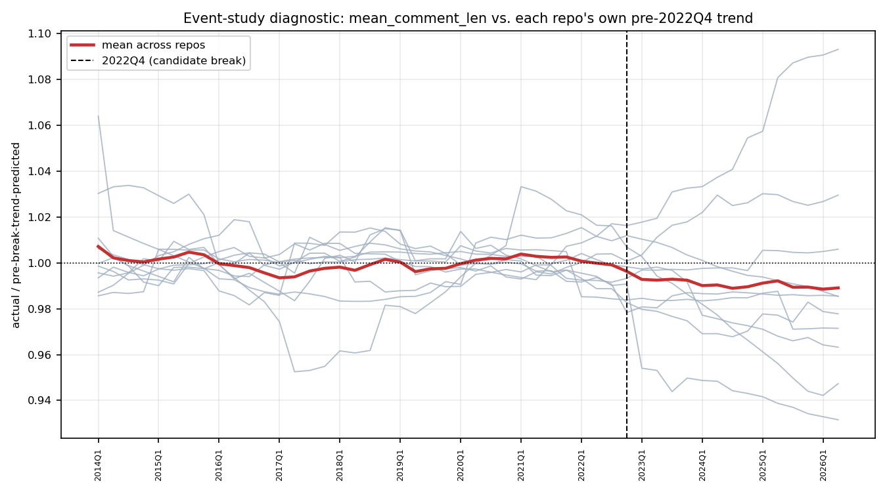
Once each repo is compared to its own pre-existing trend rather than a flat pre-period average, the mean-across-repos line (red) sits within a few percent of 1.0 throughout — no sustained, panel-wide jump at 2022Q4 or any other candidate date. Conclusion: no evidence of a discrete, panel-wide structural break in comment length, complexity, function length, or added-part size at any tested date, including the ChatGPT release. This is a real negative result, not an absence of looking — it doesn't rule out effects too small, too gradual, or too concentrated in specific authors/files for a whole-codebase quarterly aggregate to surface (that question needs the AI-detector pipeline elsewhere in this project, which operates at function granularity, not the corpus-wide average used here).
What the gray lines in those plots do show is a single-repo artifact
worth naming explicitly, because it's exactly the failure mode this
exercise is designed to catch. sympy is the visible outlier fanning away
from 1.0 in all three of function length (1.86× trend by 2026Q2),
body length (1.51×), and complexity (1.66×) — every other repo
stays within roughly ±20%. Looking at sympy's raw n_functions
column explains it without any complexity story: n_functions jumps from
16,071 to 25,579 between 2018Q2 and 2018Q3 (mean length instantly drops
19.7→14.2 as thousands of short functions enter the population), then
drops from 29,792 to 19,810 between 2022Q3 and 2022Q4 (mean length jumps
back up 13.7→18.1 as that population leaves). n_files barely moves
either time (813→783 in the second case). A large module was added
around mid-2018 and something comparable was removed or relocated around
Q4 2022 — a codebase composition change, not a shift in how anyone writes
functions. numpy shows a smaller, same-direction echo (1.22× on
function length) worth a similar sanity check before trusting it. This
is why Panel B carries n_files/parsed_files/n_functions alongside
every aggregate: without them this would have been reported as "sympy's
code got 86% more complex," which is false.
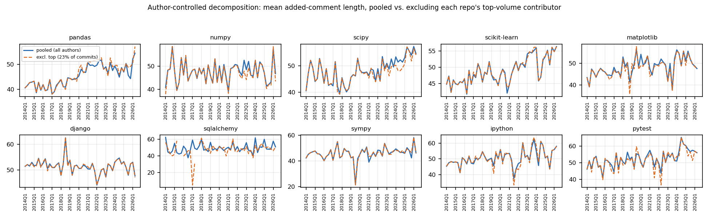
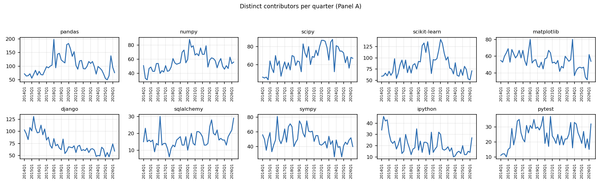
Top-volume contributor per repo, share of that repo's commits in the full 2014–2026 window:
| repo | top contributor | share |
|---|---|---|
| sqlalchemy | Mike Bayer | 70.9% |
| pandas | jbrockmendel | 23.3% |
| matplotlib | Antony Lee | 17.0% |
| pytest | Bruno Oliveira | 17.7% |
| ipython | Matthias Bussonnier | 15.8% |
| django | Tim Graham | 13.2% |
| scipy | Matt Haberland | 11.0% |
| numpy | Sebastian Berg | 8.6% |
| sympy | Oscar Benjamin | 6.3% |
| scikit-learn | Guillaume Lemaitre | 4.2% |
Every quarterly series in output/analysis/panel_a_quarterly.csv carries
both a pooled_* and an excltop_* column, plus pooled_n_contributors /
excltop_n_contributors, so any of the flow metrics can be rebuilt with or
without the dominant contributor without touching raw data.
Two concrete cases where this matters:
excltop_n_commits alongside it.Distinct-contributor counts per quarter range from single digits
(sqlalchemy, pytest, ipython in early quarters) up to ~200 (pandas at
peak) — see contributor_counts.png and the pooled_n_contributors
column for the full per-repo-quarter series.
Robust across the panel (holds in 9–10 of 10 repos, survives the trend-correction check, not driven by one repo's absolute size): - function length grows faster than body length everywhere (Family 3 headline finding) - median hunk size is flat everywhere (Family 4 headline finding) - comment length drifts up gradually in both panels, everywhere - no discrete break at any of the four tested candidate dates, in any of the four families
Single-repo or quarter-level artifacts — do not generalize:
- sympy's complexity/length swings at 2018Q3 and 2022Q4 (composition
effect from a module addition/removal, confirmed via n_functions)
- sqlalchemy's excl-top series in low-commit quarters (small-N noise, not
a real behavioral difference)
- pandas's 2026Q2 comment-length gap between pooled and excl-top (one
contributor's temporary dominance that quarter, not a repo-wide shift)
Noisiest / least conclusive:
- Panel A's median_added_code_lines_per_commit — real upward drift
(+43.5% pooled) but with the highest quarter-to-quarter variance of any
series in this study; treat individual-quarter values as unreliable and
read the trend, not the level.
output/<repo>_panel_a.csvoutput/<repo>_panel_b.csvoutput/<repo>_meta.jsonoutput/analysis/panel_a_quarterly.csvoutput/analysis/top_contributors.csvoutput/analysis/event_study_*.csvpython3 src/analysis.py && python3 src/charts.py
(re-running src/driver.py first is a no-op unless src/config.py changes)